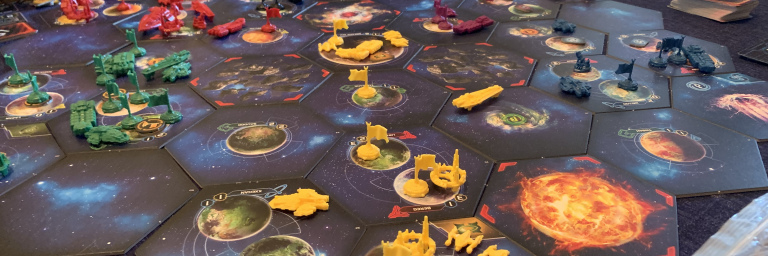

Default creates decks balanced in resource, influence, wormholes, blanks and anomalies. In default style, the number of red and blue backed systems in each deck will not be the same as the original rules.
Original creates decks balanced in resource, influence and wormholes, but tries to use the original rules as much as possible for red systems. This means that a player might have lots of blanks or anomalies, rather than a mix of both.
Warp is only valid for 5 player games, it creates a set of tiles suitable for use in a warp zone 5 player game.
This page allocates system tiles with balanced resource and influence for Twilight Imperium 4. Each run generates a new set of decks, randomised within the constraints.
It will allocate wormholes, anomalies and blank tiles using a simple heuristic to mean that each player has a similar total number of non-planet tiles, and each player has at most one wormhole.
The available resource and influence is balanced across all players, and a simple recursive backtracking alogrithm used to pick a randomised set of tiles that balances resource and influence between players. Technology, planet traits, and number of planets are not balanced.
Tile descriptions, and the heuristics to allocate non-planet tiles are factored out to ease upgrades when TI4 expansions are released.

The base rules of both Twilight Imperium 3 and 4 involve building a deck of tiles to use for the game and then randomly allocating them to players. The group we normally play with found, over time, that this often resulted in very unbalanced games. In Twilight Imperium 3 we found that balancing resources between each deck of tiles was sufficient to balance the game. But with the increased importance of influence in Twilight Imperium 4, we found that balancing both resource and influence helped to create a balanced game.
There is already an excellent universe builder available online for players who would prefer to skip the universe building stage of the game. Our group enjoys building a universe; hence this script. Running the script provides a list of systems to allocate to each player. What we normally do is build these decks, then randomly allocate each deck out to a player.
In order to not have too many constraints, we do not balance technology traits, planet traits, or the number of planets. Since these are primarily used to score secret objectives, and TI4 now involves a deck building component to secret objectives, we are comfortable with that limitation.
The source is available at http://github.com/daveah/ti4_planet_selection